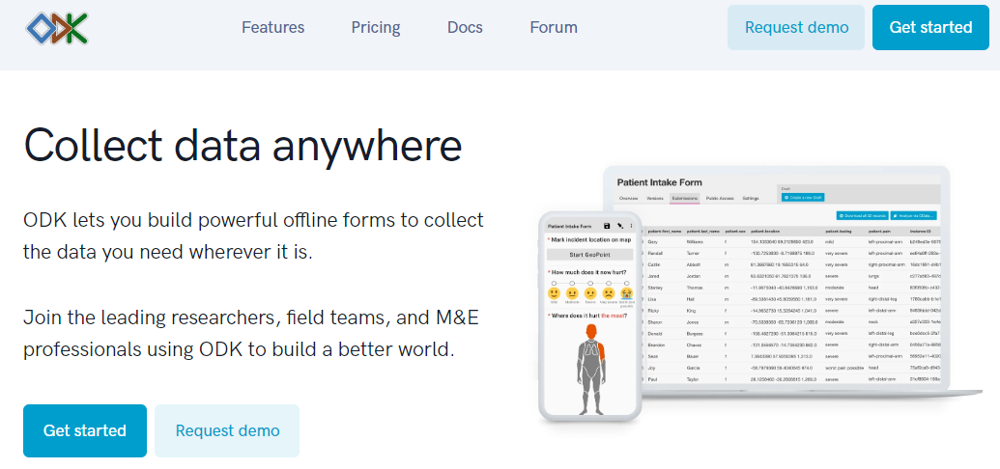
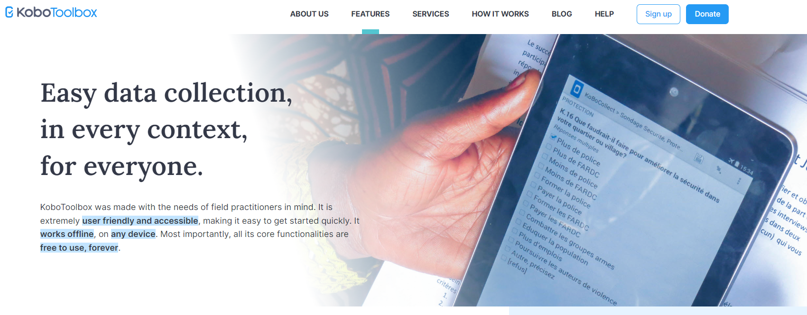
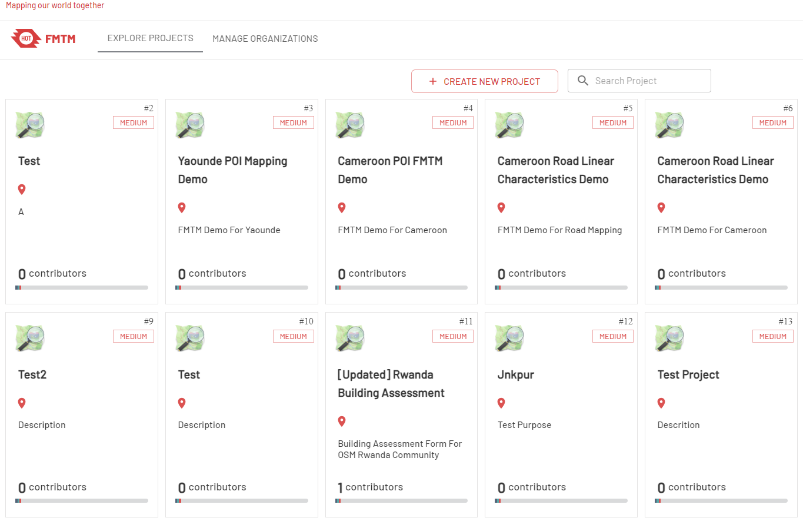

2.3 Serveur de collecte de données
Objectifs du cours
Cette section présente une vue d’ensemble des serveurs pour la collecte de données sur le terrain. Vous trouverez plusieurs options parmi lesquelles choisir. À la fin de cette section, vous devriez être en mesure d’apprendre :
- Les options de sauvegarde du serveur pour stocker les données de terrain.
- Des conseils pour sélectionner un serveur adapté aux besoins de votre projet.
- Un bref aperçu des options de serveur
Activités d’apprentissage
Au début d’un projet de cartographie, de nombreuses organisations se demandent si elles ont besoin d’un serveur. Après avoir collecté les données, vous devrez les extraire des appareils. Parfois, il suffit de collecter et de traiter les données directement à partir des dispositifs de collecte. Toutefois, cette méthode n’est pas adaptée lorsque le nombre de personnes collectant des données augmente, et cela signifie également que vos données ne sont pas sauvegardées - si vous perdez l’appareil, vous risquez de perdre les données. Avant de procéder à la collecte des données, il est important de mettre en place une stratégie de gestion des données adaptée à vos activités.
Choix de l’option de stockage
Serveur en ligne vs. Stockage physique - L’utilisation d’un serveur de collecte de données permet une bien meilleure gestion des formulaires et des déploiements, la collecte et l’agrégation des réponses, et peut offrir des fonctionnalités supplémentaires pour la visualisation, l’analyse et l’exportation des données. L’utilisation d’un serveur peut être limitée par les ressources disponibles (coût d’un serveur) et/ou la connexion internet (accès au serveur en ligne). Les serveurs utilisés dans les flux de travail HOT sont les suivants :
- Kobo Toolbox
- Le Gestionnaire de Tâche de la cartographie de terrain
- Ona.io
Si vous n’avez pas la possibilité d’utiliser un serveur, il est toujours possible et crucial de stocker des sauvegardes de données. Dans ce cas, les données devront être téléchargées ou partagées d’une autre manière avec un emplacement central, tel qu’un ordinateur portable, et clonées sur un emplacement secondaire, tel qu’un disque dur ou un deuxième ordinateur.
Quel serveur dois-je utiliser ?
Si vous décidez d’utiliser un serveur, utilisez le tableau suivant pour déterminer la table qui convient le mieux à votre projet et aux restrictions de ressources. Il ne s’agit pas des seules options disponibles, mais de serveurs que HOT a utilisés et testés sur le terrain dans le cadre de projets de cartographie.
| Je veux utiliser un serveur qui… | Kobo Toolbox | FMTM | ODK Central |
|---|---|---|---|
| est physique ou ne nécessite pas de connexion internet pour être téléchargé | 🟡(nécessite une équipe technique pour installer le serveur) | 🟡(nécessite une équipe technique pour installer le serveur) | 🟡(nécessite une équipe technique pour installer le serveur) |
| est basé sur un système en ligne (téléchargement des données via Internet) | 🟢 | 🟢 | 🟢 |
| Accepte les données ODK ou Kobo Collect | 🟢 | 🟢 | 🟢 |
| Exportation au format OSM xml ou GeoJSON | 🛑 | 🟢 | 🛑 |
| Découpe la zone en tâches plus petites | 🛑 | 🟢 | 🛑 |
| Peut fournir une visualisation des données | 🟢 | 🟡(capacité limitée) | 🟢 |
| Utilisation gratuite | 🟢(en utilisant Kobo pour l’humanitaire) | 🟢 | 🟡(nécessite une équipe technique pour installer le serveur) |
ODK Central
ODK est un outil intégré de collecte de données, qui couvre tous les aspects des activités de collecte de données, de l’élaboration des instruments de collecte de données à la collecte des données. ODK Central vous permet de créer de puissants formulaires hors ligne.

Niveau de compétence pour la mise en œuvre et la gestion
Débutant
Utilisez ODK Central si :
- Vous avez des connaissances techniques/une personne technique qui peut configurer ODK Central sur votre propre serveur.
- Collecte de données générales.
- Les données sont collectées au format .xml, comme avec ODK ou Kobo Collect.
- La collecte de données géospatiales n’inclut pas les polygones - les points GPS sont acceptés.
Visitez l’adresse https://docs.getodk.org/central-install/ pour la configuration et la gestion des données.
Kobo Toolbox
Kobo Toolbox est une plateforme en ligne qui permet aux utilisateurs de créer des enquêtes Kobo/ODK ainsi que de stocker, d’agréger et d’analyser les données Kobo/ODK.

Niveau de compétence pour la mise en œuvre et la gestion
Débutant
Utilisez Kobo Toolbox Server si :
Vous souhaitez effectuer une collecte de données liée à la réponse humanitaire.
- Collecte de données générales.
- Les données sont collectées au format .xml, par exemple avec ODK ou Kobo Collect.
- La collecte de données géospatiales ne comprend pas de polygones - les points GPS sont acceptés
Visitez l’adresse kobo.humanitarianresponse.info pour la configuration et la gestion des données
Le Gestionnaire de Tâche pour la cartographie de terrain (FMTM)
Le Gestionnaire de Tâche pour la cartographie de terrain (FMTM) est un outil qui aide les gestionnaires de projets à organiser et à gérer les tâches de cartographie. Il assigne ces tâches à des volontaires et suit leurs progrès. Le FMTM facilite la cartographie collaborative en soutenant et en étendant les outils existants - Open Data Kit (ODK). FMTM a été récemment développé par HOT en 2022 et a fait l’objet de deux projets pilotes pour tester la plateforme. FMTM prend en charge l’exportation de données en tant que fichier OSM XML, ce qui vous aidera à télécharger des données d’enquête sur le terrain et à les ouvrir directement dans JOSM..

Niveau de compétence pour la mise en œuvre et la gestion
Débutant
Utilisez Kobo Toolbox Server si :
- Vous souhaitez effectuer une collecte de données liée à OSM
- Vous souhaitez diviser la zone de votre projet en plus petites grilles à attribuer à vos géomètres/bénévoles.
- Les données sont collectées au format .xml, par exemple avec ODK
- Collecte de données géospatiales qui lira l’extrait de données OSM sous forme de geojson (polygone, centroïde ou ligne).
Visitez l’adresse https://fmtm.hotosm.org/ pour la configuration et la gestion des données
[Quiz] Testez vos connaissances
-
ODK Central est conçu pour gérer les projets de collecte de données en petites tâches/grilles
a. Vrai
b. Faux
-
Field Mapping Tasking Manager vous permet de télécharger des données de terrain au format OSM XML
a. Vrai
b. Faux
Answer: 1.B | 2.A
Liste de contrôle des activités
Vous connaissez maintenant les trois types de serveurs de collecte de données utilisés par HOT. À la fin de cette section, vous serez en mesure de :
- Faire la différence entre chaque fournisseur de serveur de collecte de données.
- Choisir le bon serveur de collecte de données en fonction des objectifs du projet